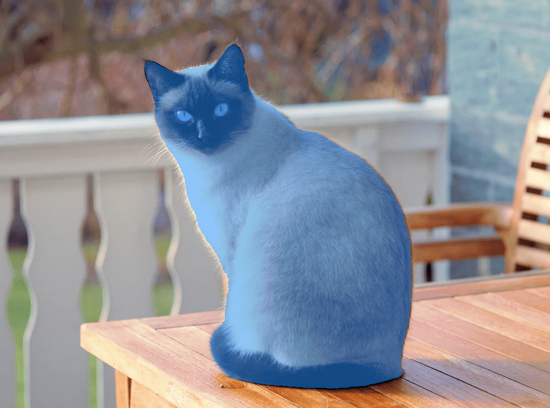

Introduction: Machine's Eyes
How does a machine see the world?
Close your eyes
Suppose you have never seen anything before. No colors, no shapes, no faces. You have never watched light bend through glass or noticed the way shadows stretch in the afternoon. Now someone hands you a sheet of paper covered in millions of tiny numbers, and they tell you: this is a photograph.
That is what it is like to be a machine looking at an image for the first time. No intuition. No memory of what a tree looks like or how a smile feels. Just a grid of numbers. 1,920 columns, 1,080 rows. Three values per cell: red, green, blue. About 6.2 million numbers, and nothing else.
Everything the machine will ever know about that image has to come from those numbers alone.
You see a cat. The machine sees 927 × 688 × 3 = 1,913,328 numbers.
Run your fingers across the grid
Picture running your fingers across that grid, feeling for patterns. Here, the numbers change sharply from dark to light. That is an edge. Over there, they ripple gently in a repeating rhythm. That is a texture. In this corner, a cluster of similar values sits quietly together. That might be a patch of sky.
This is what the earliest layers of a vision model do. They slide small filters across the image, each one sensitive to a different kind of local pattern. One filter wakes up at horizontal edges. Another responds to vertical ones. Another notices a particular color gradient. Each filter produces a new map of the image, highlighting where its pattern lives.
Think of it as learning to read Braille for the first time, but with millions of dots, and no teacher to tell you what the letters are. The model has to discover the alphabet on its own.
Step back
Now pull away. The edges start to connect. A curve here, a corner there. Two curves and a shadow become an eye. Four edges become a window frame. A circle of texture becomes a wheel.
This is what happens in the deeper layers. The model combines its small discoveries into larger ones. Edges become shapes. Shapes become parts. Parts become whole objects. Nobody tells the model to organize itself this way. It simply emerges, the same way a child learns that two eyes and a mouth make a face, not because someone explained it, but because they saw enough faces.
The hardest question
Looking at a photograph and saying "there is a cat in this image" is one thing. Looking at the same photograph and drawing a perfect outline around every single hair on that cat, separating it from the table it sits on, from the wall behind it, pixel by pixel, is something else entirely.
That is segmentation. For every one of those 6.2 million numbers, the model must answer: what does this pixel belong to? The cat's ear or the shadow beneath it? The edge of the table or the background?
To do this, the model needs two things at once. It needs to zoom in close enough to trace exact boundaries. And it needs to zoom out far enough to understand what it is looking at. That tension, between the microscope and the telescope, is what makes segmentation beautiful and difficult. It is exactly what SAM was built to solve.

Classification gives one answer per image. Segmentation gives one answer per pixel.
What comes next
Before we open up SAM3's architecture and look at every piece, sit with this for a moment. An image is just a grid of numbers. A model is just a stack of filters learning to see. And somewhere in between the raw numbers and the final mask, something remarkable happens. The machine begins to see.
Everything that follows in this series builds on that idea.